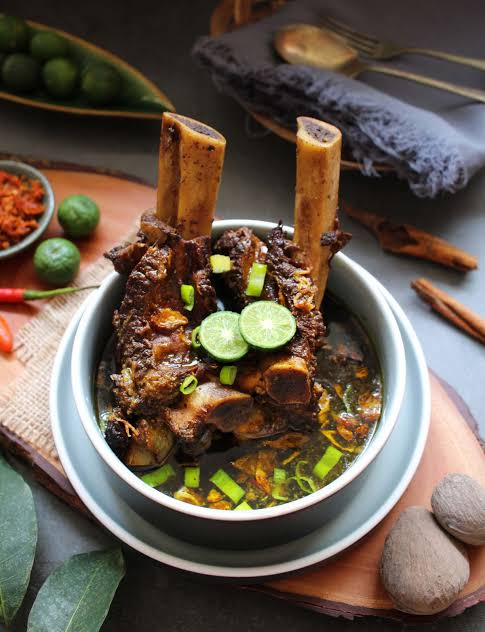

Home
Sop Konro Recipes

What is sop konro?
Sup konro or Pallu konro is an Indonesian beef rib soup dish originating from the traditions of the Makassar ethnic group.
This soup is usually made with beef ribs or beef. This brownish-black soup dish is usually eaten with burasa and ketupat
that have been cut into pieces beforehand. This dark color comes from the kluwek nut, which is indeed black in color.
The seasoning is relatively "strong" due to the use of coriander. This spicy and seasoned taste is made from a mixture of spices,
such as coriander, kluwek (the nut that causes the dish to be black), a little nutmeg, turmeric, lesser galangal, cinnamon, tamarind,
lemon leaves, cloves, and bay leaves.
Ingredients
- 300 g beef ribs (you can add beef offal if you like)
- 200 g beef
- 2 liters of water
Fine spice paste:
- 7 cloves of garlic
- 10 shallots
- 1 tbsp roasted coriander seeds
- 1/2 tsp peppercorns
- 1 tsp cumin (roasted)
- 3 candlenuts (roasted)
- 1/2 knuckle of ginger
- 1/2 knuckle of galangal
- 2 kluwek nuts (soaked in hot water and strained)
Other Spices:
- 1 stalk lemongrass (bruised)
- 3 cloves
- 3 cm cinnamon stick
- 50 g toasted grated coconut
- 2 sachets beef-flavored bouillon powder
- 1 tsp salt
- 1 tbsp granulated sugar
Complementary ingredients:
- Scallions
- Fried shallots
- Chili sauce
- Lime
How to make sop konro
- Prepare the ingredients, dry-fry the grated coconut and grind it,
then set aside; boil water until it reaches a boil, add the meat,
boil until it changes color, then discard the first boiling water;
pour in 2 liters of water again, cover, and cook for another 15 minutes;
after 15 minutes, turn off the heat and let it sit for 10 minutes without
opening the lid; after 10 minutes, turn the heat back on for 15 minutes and
keep the pot covered.
- Sauté the ground spices with the other ingredients until wilted and fragrant.
- Then put it in a pot containing the meat. Add salt, powdered broth, and granulated
sugar, add the toasted coconut that has been ground, stir until all the seasonings
are absorbed and mixed well.
- Prepare a serving bowl, add rice, pour in the konro broth along with the meat,
sprinkle with fried shallots, add lime, and top with chili sauce; it is ready to be served.